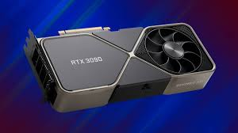

NVIDIA® GeForce RTX™ 4090 adalah GPU GeForce terbaik.
GPU ini menghadirkan terobosan besar dalam performa, efisiensi, dan grafis yang didukung AI.
Nikmati pengalaman game yang berperforma sangat tinggi, dunia virtual yang sangat detail,
produktivitas yang belum pernah ada sebelumnya, dan cara baru untuk berkarya. Kartu grafis ini
didukung oleh arsitektur NVIDIA Ada Lovelace dan dilengkapi dengan memori G6X 24 GB untuk
menghadirkan pengalaman terbaik bagi para penggemar game dan pembuat konten.

GeForce RTX 3090 Ti dan 3090 adalah big ferocious GPU (BFGPU) dengan performa kelas TITAN.
Didukung oleh Ampere, arsitektur RTX generasi ke-2 NVIDIA, yang menggandakan performa ray tracing
dan AI dengan Ray Tracing Core, Tensor Core, dan multiprosesor streaming baru yang disempurnakan.
Selain itu, perangkat ini dilengkapi memori G6X 24 GB andal, semuanya untuk menghadirkan pengalaman
terbaik bagi penggemar game dan pembuat konten.